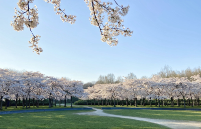
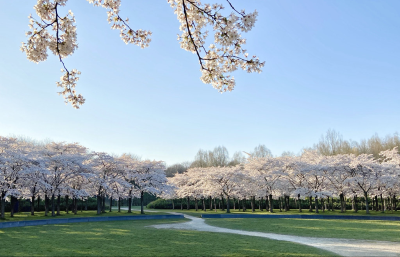

In het park zijn 400 sierkersen van de hybride Prunis xyedoensis te vinden.
Ze zijn geënt op een rechte onderstam. Jaarlijks staan deze bomen ergens
in de periode van maart tot april in bloei met roze en witte bloesems.
Met Hanami Matsuri, ofwel het Kersenbloesemfeest, vieren Japanners de komst van de lente.
Het is traditie om met familie en vrienden onder de bloeiende kersenbomen te picknicken.
Luister naar Japanse geluiden in combinatie met
vogels en neem jezelf mee op een mooi avontuur.
 
